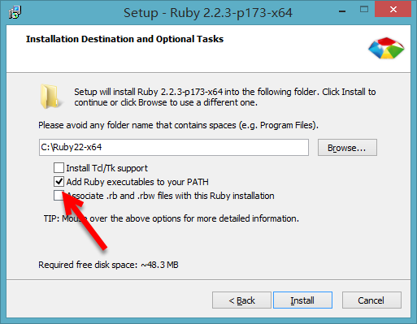
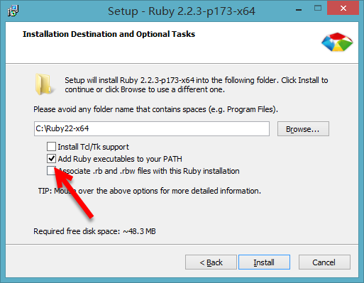

window-scss install
1.ruby安装
sass依赖于ruby环境，所以装sass之前先确认装了ruby。先导官网下载个ruby 在安装的时候，请勾选Add Ruby executables to your PATH这个选项，添加环境变量，不然以后使用编译软件的时候会提示找不到ruby环境

sass依赖于ruby环境，所以装sass之前先确认装了ruby。先导官网下载个ruby 在安装的时候，请勾选Add Ruby executables to your PATH这个选项，添加环境变量，不然以后使用编译软件的时候会提示找不到ruby环境
